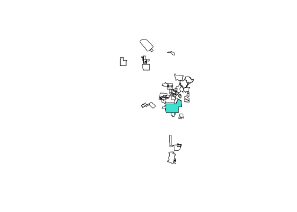

library(dplyr)
library(purrr) # for set_names() and pluck()
library(tidyr) # for pivot_wider/pivot_longer
library(sf)
library(lubridate)Working with Geographic Data
1 Introduction
Geographic data includes
- point - crime locations, intersections, schools, transit stops
- lines - roads, paths, routes
- polygons - area within city boundaries, gang injunction safety zones, areas within 1000 ft of a school, census tracts
Geographic data also include the data that go along with each of these shapes such as the area or length of the geographic object, the name of the object (e.g. City of Los Angeles), and other characteristics of the geography (e.g. population, date established).
Many questions about crime and the justice system involve the use of geographic data. In this section we will work toward answering questions about the race distribution of residents inside Los Angeles gang injunction zones, the number of crimes with 100 feet of Wilshire Blvd, and examine crimes near Metrorail stations.
We will be learning how to use the sf package for managing spatial data, the tigris package for obtaining TIGER files storing boundaries and roads, and jsonlite and tidycensus for pulling population data about residents in an area, like number of residents or race distribution.
2 Exploring Los Angeles gang injunction maps
To start, along with our familiar data organizing packages, load the sf (simple features) package to get access to all the essential spatial tools. Also load the lubridate package since we will need to work with dates along the way.
All of the spatial functions in the sf package have a prefix st_(spatial/temporal). We will first read in allinjunction.shp, a shapefile containing the geographic definition of Los Angeles gang injunctions. You should have a collection of four files related to allinjunctions, a .dbf file, a .prj file, a .shx file, and a .shp file. even though the st_read() function appears to just ask for the .shp file, you need to have all four files in the same folder.
mapSZ <- st_read("11_shapefiles_and_data/allinjunctions.shp")Reading layer `allinjunctions' from data source
`C:\R4crim\11_shapefiles_and_data\allinjunctions.shp' using driver `ESRI Shapefile'
Simple feature collection with 65 features and 13 fields
Geometry type: POLYGON
Dimension: XY
Bounding box: xmin: 6378443 ymin: 1715015 xmax: 6511590 ymax: 1940541
Projected CRS: Lambert_Conformal_ConicLet’s take a look at what we have. mapSZ has a lot of data packed into it that we will explore. To make the plot we need to ask R to just extract the geometry.
mapSZ |>
st_geometry() |>
plot()
axis(1); axis(2); box()I have added the x and y axis so that you note the scale. We can check the coordinate system for these data.
st_crs(mapSZ)Coordinate Reference System:
User input: Lambert_Conformal_Conic
wkt:
PROJCRS["Lambert_Conformal_Conic",
BASEGEOGCRS["NAD83",
DATUM["North American Datum 1983",
ELLIPSOID["GRS 1980",6378137,298.257222101,
LENGTHUNIT["metre",1]],
ID["EPSG",6269]],
PRIMEM["Greenwich",0,
ANGLEUNIT["Degree",0.0174532925199433]]],
CONVERSION["unnamed",
METHOD["Lambert Conic Conformal (2SP)",
ID["EPSG",9802]],
PARAMETER["Latitude of false origin",33.5,
ANGLEUNIT["Degree",0.0174532925199433],
ID["EPSG",8821]],
PARAMETER["Longitude of false origin",-118,
ANGLEUNIT["Degree",0.0174532925199433],
ID["EPSG",8822]],
PARAMETER["Latitude of 1st standard parallel",34.0333333333333,
ANGLEUNIT["Degree",0.0174532925199433],
ID["EPSG",8823]],
PARAMETER["Latitude of 2nd standard parallel",35.4666666666667,
ANGLEUNIT["Degree",0.0174532925199433],
ID["EPSG",8824]],
PARAMETER["Easting at false origin",6561666.66666667,
LENGTHUNIT["US survey foot",0.304800609601219],
ID["EPSG",8826]],
PARAMETER["Northing at false origin",1640416.66666667,
LENGTHUNIT["US survey foot",0.304800609601219],
ID["EPSG",8827]]],
CS[Cartesian,2],
AXIS["(E)",east,
ORDER[1],
LENGTHUNIT["US survey foot",0.304800609601219,
ID["EPSG",9003]]],
AXIS["(N)",north,
ORDER[2],
LENGTHUNIT["US survey foot",0.304800609601219,
ID["EPSG",9003]]]]Of greatest importance is to notice that the projection is not latitude and longitude, although this is clearly the case from the previous plot. The coordinate system is the Lambert Conic Conformal (LCC) tuned specifically for the Los Angeles area. This coordinate system is oriented for the North American continental plate (NAD83), so precise that this coordinate system moves as the North America tectonic plate moves (2cm per year!). Also note that the unit of measurement is in feet. Whenever we compute a distance or area with these data, the units will be in feet or square feet. This projection is EPSG 2229, commonly called “California StatePlane Zone 5 (Los Angeles area), NAD83, US survey feet.” Curiously, the term “EPSG 2229” does not show up in this CRS. Whoever created the polygons in “allinjunctions.shp” included the mathematical description of the LCC projection, but not the EPSG tag. Very fixable:
# only do this if you *know* for sure this is the right EPSG
# it does *not* transform one coordinate system to another
st_crs(mapSZ) <- 2229Let’s examine the data attached to each polygon. Here are the first three rows.
mapSZ |> head(3)Simple feature collection with 3 features and 13 fields
Geometry type: POLYGON
Dimension: XY
Bounding box: xmin: 6378443 ymin: 1893403 xmax: 6438243 ymax: 1924413
Projected CRS: NAD83 / California zone 5 (ftUS)
AREA PERIMETER GANG_INJ11 GANG_INJ_1 SHADESYM NAME Inj_
1 18152790 17048.67 2 9 8 Foothill 09
2 11423653 20863.36 3 1 760 Langdon Street 04
3 129459650 54419.87 4 11 140 Canoga Park 11
case_no Safety_Zn LAPD_Div Pre_Date Perm_Date
1 PC027254 Foothill Foothill <NA> Aug. 22, 2001
2 LC048292 Langdon Street Devonshire May 20, 1999 Feb. 17, 2000
3 BC267153 Canoga Park West Valley Feb. 25, 2002 April 24, 2002
gang_name geometry
1 Pacoima Project Boys POLYGON ((6435396 1924413, ...
2 Langdon Street POLYGON ((6418722 1908442, ...
3 Canoga Park Alabama POLYGON ((6379791 1908614, ...An sf object is really just a data frame with a special geometry column containing a description of the geographic object associated with that row. In this case we can see that each row is associated with a polygon. Each polygon in the map is associated with a specific gang injunction. The data attached to each polygon gives details about the associated injunction, such as the name of the injunction, in which LAPD division it is located, dates of the preliminary and permanent injunction, and the name of the gang that the injunction targets.
We can extract the coordinates of an injunction. Let’s grab the coordinates of the polygon for the first injunction.
mapSZ |>
head(1) |>
st_coordinates() X Y L1 L2
[1,] 6435396 1924413 1 1
[2,] 6435607 1924174 1 1
[3,] 6435792 1923960 1 1
[4,] 6435872 1923867 1 1
[5,] 6436158 1923545 1 1
[6,] 6436349 1923325 1 1
[7,] 6437295 1922239 1 1
[8,] 6438231 1921163 1 1
[9,] 6438243 1921150 1 1
[10,] 6437992 1920931 1 1
[11,] 6437743 1920714 1 1
[12,] 6437495 1920498 1 1
[13,] 6437246 1920282 1 1
[14,] 6436874 1919958 1 1
[15,] 6436472 1919608 1 1
[16,] 6435940 1919144 1 1
[17,] 6435771 1918998 1 1
[18,] 6435633 1918878 1 1
[19,] 6435311 1918597 1 1
[20,] 6435143 1918451 1 1
[21,] 6435086 1918401 1 1
[22,] 6434689 1918857 1 1
[23,] 6434139 1919485 1 1
[24,] 6433857 1919808 1 1
[25,] 6433742 1919938 1 1
[26,] 6433189 1920572 1 1
[27,] 6433040 1920743 1 1
[28,] 6432908 1920894 1 1
[29,] 6432706 1921120 1 1
[30,] 6432500 1921348 1 1
[31,] 6432467 1921385 1 1
[32,] 6432279 1921596 1 1
[33,] 6432227 1921658 1 1
[34,] 6432296 1921718 1 1
[35,] 6432466 1921866 1 1
[36,] 6433399 1922679 1 1
[37,] 6433404 1922683 1 1
[38,] 6433857 1923073 1 1
[39,] 6434399 1923545 1 1
[40,] 6434790 1923885 1 1
[41,] 6434822 1923914 1 1
[42,] 6435396 1924413 1 1Let’s highlight the first injunction in our map. We can use filter() to select rows in mapSZ using any feature listed in names(mapSZ). We will select it using its case number. Use add=TRUE to add the second plot to the first.
mapSZ |>
st_geometry() |>
plot()
mapSZ |>
filter(case_no=="PC027254") |>
st_geometry() |>
plot(col="red", border=NA, add=TRUE)Now we can see this tiny injunction shaded in red at the top of the map.
Turning back to the data attached to the map, we need to do some clean up on the dates. They are not in standard form and include a typo. We will fix the spelling error and use lubridate to standardize those dates. We will also add a startDate feature as the smaller of the preliminary injunction date and the permanent injunction date using the pairwise minimum function pmin().
mapSZ <- mapSZ |>
mutate(Pre_Date = gsub("Jne", "June", x=Pre_Date) |>
mdy(),
Perm_Date = mdy(Perm_Date),
startDate = pmin(Pre_Date, Perm_Date, na.rm=TRUE)) |>
# some start dates I looked up in court records
# https://www.lacourt.ca.gov/pages/lp/access-a-case/tp/find-case-information/cp/os-civil-case-access
mutate(startDate=case_match(case_no,
"BC415694" ~ ymd("2009-06-12"),
"BC435316" ~ ymd("2011-04-19"),
"BC175684" ~ ymd("1998-11-10"), # dismissed 2001/12/14
"BC190334" ~ ymd("1998-05-01"), # dismissed 2001/03/02
"VC024170" ~ NA, # never granted/enforced
"BC399741" ~ ymd("2008-10-10"),
"BC187039" ~ NA, # never granted
.default=startDate))Now let’s highlight the injunctions before 2000 in red, those between 2000 and 2010 in green, and those after 2010 in blue. Since many of the polygons overlap, we are going to make the colors a little transparent so that we can see the overlap.
mapSZ |>
mutate(period = cut(year(startDate),
breaks = c(0, 1999, 2009, Inf),
labels = c("pre-2000","2000s","2010+"))) |>
select(period) |>
plot(pal = adjustcolor(c("red","green","blue"),
alpha.f=0.5), # make a little transparent
border = "black",
main="")When we loaded up the sf package, we also gained access to the GEOS library of geographic operations. For example, we can union (combine) all of the polygons together into one shape.
mapSZunion <- st_union(mapSZ)
mapSZunion |>
st_geometry() |>
plot()st_union()
Any overlapping injunctions have been combined into one polygon. mapSZunion now contains this unioned collection of polygons. Note that mapSZunion no longer has any data attached to it. Once we union polygons together, it is no longer obvious how to combine their associated data.
mapSZunionGeometry set for 1 feature
Geometry type: MULTIPOLYGON
Dimension: XY
Bounding box: xmin: 6378443 ymin: 1715015 xmax: 6511590 ymax: 1940541
Projected CRS: NAD83 / California zone 5 (ftUS)MULTIPOLYGON (((6457867 1818625, 6457867 181847...Let’s draw a polygon defining the area of Los Angeles that is within 1000 feet of an injunction. First, we will double check the units this map uses.
# check units
st_crs(mapSZunion)$units[1] "us-ft"# create a buffer 1000 feet around the injunctions
mapSZ1000ft <- mapSZunion |> st_buffer(dist=1000)
mapSZ1000ft |>
st_geometry() |>
plot()
mapSZunion |>
st_geometry() |>
plot(col="red", border=NA, add=TRUE)Every injunction area is shaded red. The white bands between the red shapes and the black outlines is the 1000-foot buffer.
Previously we had to clean up some typos on the injunction dates data. The data can also have errors in the geography that requires fixing. Have a look at the MS13 gang injunction.
mapSZms13 <- mapSZ |>
filter(case_no=="BC311766")
mapSZms13 |>
st_geometry() |>
plot()The injunction has two mutually exclusive polygons that define the injunction. Both have strange artifacts. Examining the mapSZms13 object, we can see that it has four polygons. Let’s color them so we can see which one is which. The ones with the smallest areas must be the artifacts.
mapSZms13Simple feature collection with 4 features and 14 fields
Geometry type: POLYGON
Dimension: XY
Bounding box: xmin: 6463941 ymin: 1841325 xmax: 6479076 ymax: 1858250
Projected CRS: NAD83 / California zone 5 (ftUS)
AREA PERIMETER GANG_INJ11 GANG_INJ_1 SHADESYM NAME Inj_
1 70459367 34712.862 13 1 0 Rampart/East Hollywood 18
2 3452577 7902.383 14 1 0 Rampart/East Hollywood 18
3 49977447 32248.724 18 2 0 Rampart/East Hollywood 18
4 1403021 5211.601 22 2 0 Rampart/East Hollywood 18
case_no Safety_Zn LAPD_Div Pre_Date Perm_Date
1 BC311766 Rampart/East Hollywood (MS) Hwd/Wil/Rmp 2004-04-08 2004-05-10
2 BC311766 Rampart/East Hollywood (MS) Hwd/Wil/Rmp 2004-04-08 2004-05-10
3 BC311766 Rampart/East Hollywood (MS) Hwd/Wil/Rmp 2004-04-08 2004-05-10
4 BC311766 Rampart/East Hollywood (MS) Hwd/Wil/Rmp 2004-04-08 2004-05-10
gang_name geometry startDate
1 Mara Salvatrucha POLYGON ((6470191 1858229, ... 2004-04-08
2 Mara Salvatrucha POLYGON ((6465399 1858217, ... 2004-04-08
3 Mara Salvatrucha POLYGON ((6468057 1844983, ... 2004-04-08
4 Mara Salvatrucha POLYGON ((6477222 1841927, ... 2004-04-08# rows 1 & 3 seem to have the largest AREA
plot(st_geometry(mapSZms13),
border = c("green","red","green","blue"),
lwd = c(3,1,3,1))The Los Angeles City Attorney’s Office had an injunction map posted on its website that I have archived so we can see what the correct shape is supposed to be. Let’s clear out the weird artifacts to repair the gang injunction geometry. We can use st_union() to combine all the polygons together.
a <- st_union(mapSZms13)
aGeometry set for 1 feature
Geometry type: MULTIPOLYGON
Dimension: XY
Bounding box: xmin: 6463941 ymin: 1841325 xmax: 6479076 ymax: 1858250
Projected CRS: NAD83 / California zone 5 (ftUS)MULTIPOLYGON (((6476845 1841356, 6476741 184141...Remember that st_union() will eliminate the associated data elements. Let’s borrow all the data from the first polygon, combine it with our unioned polygons, and use st_sf() to make a new simple features object.
mapSZms13 <- mapSZms13 |>
head(1) |>
select(NAME, case_no, Safety_Zn, gang_name, startDate) |>
st_sf(geometry=a)Now let’s plot the final MS13 gang injunction safety zone and color in a 500-foot buffer around it. st_difference() computes the “difference” between two geometric objects. Here we take the polygon defined by being 500 feet out from the MS13 injunction area and “subtract” the injunction area leaving a sort of donut around the injunction area. You can safely ignore warnings about “attribute variables are assumed to be spatially constant throughout all geometries.” st_difference() assumes its result can inherit the data associated from the original objects used in the difference.
mapSZms13 |>
st_geometry() |>
plot()
mapSZms13 |>
st_buffer(dist=500) |>
st_geometry() |>
plot(add=TRUE)
mapSZmapBuf <- mapSZms13 |>
st_buffer(dist=500) |>
st_difference(mapSZms13)
mapSZmapBuf |>
st_geometry() |>
plot(col="green", add=TRUE)2.1 Exercises
Find the largest and smallest safety zones (use
st_area(mapSZ))Plot all the safety zones. Color the largest in one color and the smallest in another color
Use
st_overlaps(mapSZ, mapSZ, sparse=FALSE)orprint(st_overlaps(mapSZ, mapSZ, sparse=TRUE), n=Inf, max_nb=Inf)to find two safety zones that overlap (not just touch at the edges)With the two safety zones that you found in the previous question, plot using three different colors the first safety zone, second safety zone, and their intersection (hint: use
st_intersection())
3 Using TIGER files from the US Census to merge in other geographic data
The US Census Bureau provides numerous useful geographic data files. We will use their TIGER files to get a map of the City of Los Angeles and we will get the census tracts that intersect with the city. Once you know an area’s census tract, you can obtain data on the population of the area. All of the TIGER files are available at https://www.census.gov/cgi-bin/geo/shapefiles/index.php.
First, we will extract an outline of the city. The file tl_2019_06_place.shp file is a TIGER line file, created in 2019, for state number 06 (California is 6th in alphabetical order), and contains all of the places (cities and towns). Here is the entire state.
mapCAplaces <- st_read("11_shapefiles_and_data/tl_2019_06_place.shp")Reading layer `tl_2019_06_place' from data source
`C:\R4crim\11_shapefiles_and_data\tl_2019_06_place.shp' using driver `ESRI Shapefile'
Simple feature collection with 1521 features and 16 fields
Geometry type: MULTIPOLYGON
Dimension: XY
Bounding box: xmin: -124.2695 ymin: 32.53433 xmax: -114.229 ymax: 41.99317
Geodetic CRS: NAD83mapCAplaces |>
st_geometry() |>
plot()
The tigris package simplifies the process of navigating the Census website, locating the right shape files, and storing them in the right local folder. It will do all of those steps and load it into R as an sf object.
library(tigris)
options(tigris_use_cache = TRUE) # avoids repeated downloads of same file
mapCAplaces <- places(state="CA", year=2019, class="sf")And here is just the part of that shapefile containing Los Angeles.
mapLA <- mapCAplaces |>
filter(NAMELSAD=="Los Angeles city")
mapLA |>
st_geometry() |>
plot()Now let’s load in the census tracts for all of California.
# approach using tigris
mapCens <- tracts(state="CA", year=2019, class="sf")
# or if you have it local
# mapCens <- st_read("11_shapefiles_and_data/tl_2019_06_tract.shp")mapCens contains polygons for all census tracts in California. That is a lot more than we need. We just need the ones that overlap with Los Angeles. st_intersects() can help us determine which census tracts are in Los Angeles.
st_intersects(mapCens, mapLA)Sparse geometry binary predicate list of length 8057, where the
predicate was `intersects'
first 10 elements:
1: 1
2: 1
3: 1
4: 1
5: 1
6: 1
7: (empty)
8: (empty)
9: (empty)
10: (empty)The resulting object has the same length as the number of census tracts in mapCens. The value of each component is the index of st_intersects() second argument that it intersects. In this example, mapLA is a single object so st_intersects() is either going to be a 1 or empty.
3.1 Transform to a shared coordinate system
Both mapLA and mapCens use the latitude/longitude coordinate system, which is not the same as the coordinate system we are using for the gang injunctions.
st_crs(mapLA)Coordinate Reference System:
User input: NAD83
wkt:
GEOGCRS["NAD83",
DATUM["North American Datum 1983",
ELLIPSOID["GRS 1980",6378137,298.257222101,
LENGTHUNIT["metre",1]]],
PRIMEM["Greenwich",0,
ANGLEUNIT["degree",0.0174532925199433]],
CS[ellipsoidal,2],
AXIS["latitude",north,
ORDER[1],
ANGLEUNIT["degree",0.0174532925199433]],
AXIS["longitude",east,
ORDER[2],
ANGLEUNIT["degree",0.0174532925199433]],
ID["EPSG",4269]]st_crs(mapCens)Coordinate Reference System:
User input: NAD83
wkt:
GEOGCRS["NAD83",
DATUM["North American Datum 1983",
ELLIPSOID["GRS 1980",6378137,298.257222101,
LENGTHUNIT["metre",1]]],
PRIMEM["Greenwich",0,
ANGLEUNIT["degree",0.0174532925199433]],
CS[ellipsoidal,2],
AXIS["latitude",north,
ORDER[1],
ANGLEUNIT["degree",0.0174532925199433]],
AXIS["longitude",east,
ORDER[2],
ANGLEUNIT["degree",0.0174532925199433]],
ID["EPSG",4269]]st_crs(mapSZ)Coordinate Reference System:
User input: EPSG:2229
wkt:
PROJCRS["NAD83 / California zone 5 (ftUS)",
BASEGEOGCRS["NAD83",
DATUM["North American Datum 1983",
ELLIPSOID["GRS 1980",6378137,298.257222101,
LENGTHUNIT["metre",1]]],
PRIMEM["Greenwich",0,
ANGLEUNIT["degree",0.0174532925199433]],
ID["EPSG",4269]],
CONVERSION["SPCS83 California zone 5 (US survey foot)",
METHOD["Lambert Conic Conformal (2SP)",
ID["EPSG",9802]],
PARAMETER["Latitude of false origin",33.5,
ANGLEUNIT["degree",0.0174532925199433],
ID["EPSG",8821]],
PARAMETER["Longitude of false origin",-118,
ANGLEUNIT["degree",0.0174532925199433],
ID["EPSG",8822]],
PARAMETER["Latitude of 1st standard parallel",35.4666666666667,
ANGLEUNIT["degree",0.0174532925199433],
ID["EPSG",8823]],
PARAMETER["Latitude of 2nd standard parallel",34.0333333333333,
ANGLEUNIT["degree",0.0174532925199433],
ID["EPSG",8824]],
PARAMETER["Easting at false origin",6561666.667,
LENGTHUNIT["US survey foot",0.304800609601219],
ID["EPSG",8826]],
PARAMETER["Northing at false origin",1640416.667,
LENGTHUNIT["US survey foot",0.304800609601219],
ID["EPSG",8827]]],
CS[Cartesian,2],
AXIS["easting (X)",east,
ORDER[1],
LENGTHUNIT["US survey foot",0.304800609601219]],
AXIS["northing (Y)",north,
ORDER[2],
LENGTHUNIT["US survey foot",0.304800609601219]],
USAGE[
SCOPE["Engineering survey, topographic mapping."],
AREA["United States (USA) - California - counties Kern; Los Angeles; San Bernardino; San Luis Obispo; Santa Barbara; Ventura."],
BBOX[32.76,-121.42,35.81,-114.12]],
ID["EPSG",2229]]Furthermore, st_intersects() and most other geographic functions do not work well, with latitude and longitude. We should really work with all of our spatial objects having the same projection. We can transform mapLA and mapCens to have the same coordinate system as our injunction area map, mapSZ, which uses a projection (LCC) different from latitude/longitude.
mapCens <- mapCens |> st_transform(crs=st_crs(mapSZ))
mapLA <- mapLA |> st_transform(crs=st_crs(mapSZ))Now we can ask R to tell us for each census tract whether or not it intersects with the Los Angeles map. The result of st_intersects() is a list where a[[1]] will tell us which of the polygons in mapLA intersects with the first polygon in mapCens. Again, since mapLA only has one polygon, a[[1]] will either be empty or 1. Therefore, to create an indicator of intersecting Los Angeles we just need to know whether the length of each element of a exceeds 0 (is not empty). We will create a new column in the mapCens data containing a TRUE/FALSE indicator of whether that census tract is in Los Angeles or not.
a <- mapCens |> st_intersects(mapLA)
# length equals the number of census tracts
length(a) == nrow(mapCens)[1] TRUE# lengths() asks every component of a how many elements they contain
mapCens$inLA <- lengths(a) > 0Equivalently, we could have asked st_intersects() to create a list of census tracts that intersect with mapLA, by reversing mapLA and mapCens in st_intersects().
a <- st_intersects(mapLA, mapCens)
# should equal 1, there's only one shape in mapLA
length(a)[1] 1# save the indices of census tracts that intersect with mapLA
iLAtracts <- a |>
unlist()
iLAtracts |> head(10) # print out the first 10 to check [1] 1 2 3 4 5 6 17 18 19 20mapCens <- mapCens |>
mutate(inLA = (row_number() %in% iLAtracts))Let’s check that the census tracts with TRUE for inLA actually intersect Los Angeles.
mapCens <- mapCens |>
filter(inLA)
mapCens |>
st_geometry() |>
plot()
mapLA |>
st_geometry() |>
plot(add=TRUE, border="red", lwd=3)
Which census tracts cover the MS13 safety zone?
st_intersects(mapSZms13, mapCens)Sparse geometry binary predicate list of length 1, where the predicate
was `intersects'
1: 18, 95, 101, 102, 103, 110, 133, 141, 165, 199, ...a <- mapSZms13 |>
st_intersects(mapCens) |>
unlist()
mapCens <- mapCens |>
mutate(inMS13 = (row_number() %in% a))
mapCens |>
filter(inMS13) |>
st_geometry() |>
plot()
mapSZms13 |>
st_geometry() |>
plot(border="red", lwd=3, add=TRUE)3.2 Exercise
- Census tracts that just touch the boundary of the safety zone are included. To eliminate, rather than use
st_intersects()withmapSZms13, usest_intersects()withst_buffer()with a negativedistto select census tracts
4 Merge in demographic data from the American Community Survey
The full census of the United States occurs every ten years, but in between those surveys the Census Bureau collects data through the American Community Survey (ACS) by selecting a sample of households. These surveys have a lot of information about people and neighborhoods. We are going to use the ACS to gather race data on the residents within census tracts.
JSON (JavaScript Object Notation) is a very common protocol for moving data. The ACS provides JSON access to its data. There are other ways of accessing ACS data, like downloading the entire ACS dataset, but we are going to use JSON so that you become familiar with how JSON works. Also, when we only need a small amount of information (just race data from particular census tracts) it can save a lot of effort when compared with downloading and processing the full ACS dataset.
First, let’s load the jsonlite library.
library(jsonlite)Here is how you can access the ACS data on the total population of the United States in 2010
fromJSON("https://api.census.gov/data/2010/acs/acs5?get=NAME,B01001_001E&for=us:*") [,1] [,2] [,3]
[1,] "NAME" "B01001_001E" "us"
[2,] "United States" "303965272" "1" Let’s deconstruct this URL. First, we are accessing data from the 2010 ACS data using https://api.census.gov/data/2010/acs/. Second, we are using the data from the ACS sample collected over the last five years to estimate the total population… that is the acs5 part. Third, we are accessing variable B01001_001E, which contains an estimate (the E at the end is for estimate) of the number of people in the United States. This we needed to track down, but the Social Explorer website makes this easier. Navigate to Social Explorer through the Penn Library to gain full access. Lastly, we asked for=us:*, meaning for the entire United States.
If we want the total number of people in specific census tracts, then we can make this request.
fromJSON("https://api.census.gov/data/2010/acs/acs5?get=B01001_001E&for=tract:204920,205110&in=state:06+county:037") [,1] [,2] [,3] [,4]
[1,] "B01001_001E" "state" "county" "tract"
[2,] "2483" "06" "037" "204920"
[3,] "3865" "06" "037" "205110"Here we have requested population data (variable B01001_001E) for two specific census tracts (204920 and 205110) from California (state 06) in Los Angeles County (county 037).
If we want the total population in each tract in Los Angeles County, just change the tract list to an *.
fromJSON("https://api.census.gov/data/2010/acs/acs5?get=B01001_001E&for=tract:*&in=state:06+county:037") |>
# over 2000 census tracts in LA County... show first 10
head() [,1] [,2] [,3] [,4]
[1,] "B01001_001E" "state" "county" "tract"
[2,] "4493" "06" "037" "141400"
[3,] "2715" "06" "037" "141500"
[4,] "3693" "06" "037" "141600"
[5,] "3002" "06" "037" "141700"
[6,] "3900" "06" "037" "143100"Many more examples are posted at the Census API website.
Now let’s get something more complete that we can merge into our geographic data. For each census tract in Los Angeles County, we will extract the total population (B03002001), the number of non-Hispanic white residents (B03002003), non-Hispanic black residents (B03002004), and Hispanic residents (B03002012).
We could craft a JSON query to pull these data. However, the tidycensus package provides a handy set of tools that wrap around these JSON API calls. If you expect to hit the Census API a lot, then you need to create an account and get a Census API key. For the volume of requests we will do here (less than 500 per day), it is not necessary. Here we get ACS data on race using get_acs().
library(tidycensus)
dataRace <-
get_acs(geography = "tract",
variables = c("B03002_001E","B03002_003E",
"B03002_004E","B03002_012E"),
state = "CA",
county = "Los Angeles",
year = 2010,
survey = "acs5",
cache_table = TRUE,
show_call = TRUE)Getting data from the 2006-2010 5-year ACSWarning: • You have not set a Census API key. Users without a key are limited to 500
queries per day and may experience performance limitations.
ℹ For best results, get a Census API key at
http://api.census.gov/data/key_signup.html and then supply the key to the
`census_api_key()` function to use it throughout your tidycensus session.
This warning is displayed once per session.Census API call: https://api.census.gov/data/2010/acs/acs5?get=B03002_001E%2CB03002_001M%2CB03002_003E%2CB03002_003M%2CB03002_004E%2CB03002_004M%2CB03002_012E%2CB03002_012M%2CNAME&for=tract%3A%2A&in=state%3A06%2Bcounty%3A037dataRace# A tibble: 9,384 × 5
GEOID NAME variable estimate moe
<chr> <chr> <chr> <dbl> <dbl>
1 06037101110 Census Tract 1011.10, Los Angeles County… B03002_… 5017 362
2 06037101110 Census Tract 1011.10, Los Angeles County… B03002_… 3248 466
3 06037101110 Census Tract 1011.10, Los Angeles County… B03002_… 38 41
4 06037101110 Census Tract 1011.10, Los Angeles County… B03002_… 1085 390
5 06037101122 Census Tract 1011.22, Los Angeles County… B03002_… 3663 287
6 06037101122 Census Tract 1011.22, Los Angeles County… B03002_… 2426 286
7 06037101122 Census Tract 1011.22, Los Angeles County… B03002_… 0 132
8 06037101122 Census Tract 1011.22, Los Angeles County… B03002_… 451 167
9 06037101210 Census Tract 1012.10, Los Angeles County… B03002_… 6799 575
10 06037101210 Census Tract 1012.10, Los Angeles County… B03002_… 3235 529
# ℹ 9,374 more rowsWith show_call = TRUE I have asked get_acs() to reveal the JSON query it used to fetch the data. For each census tract/variable combination we have an estimate and its margin of error. Let’s clean this up, give clearer race labels, and pivot to create one row per census tract.
dataRace <- dataRace |>
select(GEOID, variable, estimate) |>
mutate(race = case_match(variable,
"B03002_001" ~ "total",
"B03002_003" ~ "white",
"B03002_004" ~ "black",
"B03002_012" ~ "hisp")) |>
select(-variable) |>
pivot_wider(names_from = race,
values_from = estimate,
values_fill = 0) |>
mutate(other = total-white-black-hisp)
dataRace# A tibble: 2,346 × 6
GEOID total white black hisp other
<chr> <dbl> <dbl> <dbl> <dbl> <dbl>
1 06037101110 5017 3248 38 1085 646
2 06037101122 3663 2426 0 451 786
3 06037101210 6799 3235 252 2790 522
4 06037101220 3189 1768 23 1148 250
5 06037101300 3808 3121 12 423 252
6 06037101400 3733 2868 132 406 327
7 06037102103 1841 1264 39 298 240
8 06037102104 3695 2763 32 550 350
9 06037102105 1525 166 0 1193 166
10 06037102107 3503 2332 40 826 305
# ℹ 2,336 more rowsNow we have a data frame that links the census tract numbers to populations and race data. Let’s add race information to the MS13 injunction data. And since we have been using a lot of base R’s plotting functions, to change things up let’s create a ggplot.
library(ggplot2)
# match tract IDs and merge in % hispanic
mapCens |>
# merge in race data
left_join(dataRace, join_by(GEOID==GEOID)) |>
mutate(pctHisp = if_else(total>0 & !is.na(hisp), hisp/total, 0),
# choose a shade of gray
colGray = gray(pctHisp),
# nicely formatted percentages
pctHispLabel = scales::percent(pctHisp, accuracy = 1)) |>
filter(inMS13) |>
ggplot() +
geom_sf(aes(fill = colGray), color = NA) +
geom_sf(data=mapSZms13, col="red", fill=NA) +
# tells ggplot fill has actual color values
scale_fill_identity() +
geom_sf_text(aes(label = pctHispLabel),
# function giving where to place label
fun.geometry = st_point_on_surface,
size = 3,
color = "black",
# text that overlaps previous text not plotted
check_overlap = TRUE) +
labs(x = NULL, y = NULL) +
theme_minimal()4.1 Exercise
Create a map of all census tracts in the City of Los Angeles within 1 mile of one of the safety zones (you choose which safety zone)
Color each area based on a census feature (e.g. % non-white, or some other feature from the ACS data)
Add the polygon with your injunction zone
Add other injunction zones that intersect with your map
5 Working with point data using Los Angeles crime data
The Los Angeles Police Department (LAPD) posts all of its crime data at Los Angeles’ open data portal. We are interested in the 2010-2019 crime data held in the 2010-2019 crime data file. We are also interested in the crime data for 2020 to the present, which LAPD posts separately.
There are several ways we could go about retrieving the data. One method is to ask R to download the data to our computer and then use read.csv() to import it. Conveniently, the Los Angeles open data portal allows “SoQL” queries, meaning that we can use SQL-like where clauses. By default, SoQL will limit the result to 1,000 rows, so I have modified the limit to 5 million, more than enough to get all the 2019 crime data. Here I demonstrate retrieving just the 2019 crime incidents.
# Method #1
if(!file.exists("11_shapefiles_and_data/LAPD crime data 2019.csv"))
{
download.file("https://data.lacity.org/resource/63jg-8b9z.csv?$where=date_extract_y(date_occ)=2019&$limit=5000000",
destfile = "11_shapefiles_and_data/LAPD crime data 2019.csv")
}
dataCrime <- read.csv("11_shapefiles_and_data/LAPD crime data 2019.csv",
as.is=TRUE)
# check data range
range(dataCrime$date_occ)[1] "2019-01-01T00:00:00.000" "2019-12-31T00:00:00.000"# check number of rows and columns
dim(dataCrime)[1] 218918 28# check first few rows
head(dataCrime, 3) dr_no date_rptd date_occ time_occ area
1 191907191 2019-03-11T00:00:00.000 2019-03-08T00:00:00.000 1500 19
2 192015710 2019-08-24T00:00:00.000 2019-08-23T00:00:00.000 537 20
3 191417298 2019-08-01T00:00:00.000 2019-07-26T00:00:00.000 1000 14
area_name rpt_dist_no part_1_2 crm_cd crm_cd_desc mocodes vict_age
1 Mission 1918 1 510 VEHICLE - STOLEN 0
2 Olympic 2005 1 648 ARSON 50
3 Pacific 1427 1 510 VEHICLE - STOLEN 0
vict_sex vict_descent premis_cd premis_desc weapon_used_cd weapon_desc status
1 101 STREET NA IC
2 M H 101 STREET NA IC
3 101 STREET NA IC
status_desc crm_cd_1 crm_cd_2 crm_cd_3 crm_cd_4
1 Invest Cont 510 NA NA NA
2 Invest Cont 648 NA NA NA
3 Invest Cont 510 NA NA NA
location cross_street lat lon
1 13200 FOOTHILL BL 34.2991 -118.4211
2 400 N NORMANDIE AV 34.0799 -118.3025
3 3100 S SEPULVEDA BL 34.0265 -118.4279Alternatively, we can just skip the download and ask R to directly read in the data from the Los Angeles data portal. The only downside to this is if you mess up your data, then you will need to download it all over again, which can be slow.
# Method #2
dataCrime <- read.csv("https://data.lacity.org/resource/63jg-8b9z.csv?$where=date_extract_y(date_occ)=2019&$limit=5000000",
as.is=TRUE) # don't convert strings to other types (e.g. logical)
# check data range
range(dataCrime$date_occ)[1] "2019-01-01T00:00:00.000" "2019-12-31T00:00:00.000"# check number of rows and columns
dim(dataCrime)[1] 218918 28# check first few rows
head(dataCrime, 3) dr_no date_rptd date_occ time_occ area
1 191907191 2019-03-11T00:00:00.000 2019-03-08T00:00:00.000 1500 19
2 192015710 2019-08-24T00:00:00.000 2019-08-23T00:00:00.000 537 20
3 191417298 2019-08-01T00:00:00.000 2019-07-26T00:00:00.000 1000 14
area_name rpt_dist_no part_1_2 crm_cd crm_cd_desc mocodes vict_age
1 Mission 1918 1 510 VEHICLE - STOLEN 0
2 Olympic 2005 1 648 ARSON 50
3 Pacific 1427 1 510 VEHICLE - STOLEN 0
vict_sex vict_descent premis_cd premis_desc weapon_used_cd weapon_desc status
1 101 STREET NA IC
2 M H 101 STREET NA IC
3 101 STREET NA IC
status_desc crm_cd_1 crm_cd_2 crm_cd_3 crm_cd_4
1 Invest Cont 510 NA NA NA
2 Invest Cont 648 NA NA NA
3 Invest Cont 510 NA NA NA
location cross_street lat lon
1 13200 FOOTHILL BL 34.2991 -118.4211
2 400 N NORMANDIE AV 34.0799 -118.3025
3 3100 S SEPULVEDA BL 34.0265 -118.4279Let’s download all 2010-2019 data as well as the 2020-present data so that we can explore changes in crime over time.
# get the 2010-2019 data
options(timeout = 600) # ten minutes
if(!file.exists("11_shapefiles_and_data/LAPD crime data 2010-2019.csv"))
{
download.file("https://data.lacity.org/resource/63jg-8b9z.csv?$limit=5000000",
destfile = "11_shapefiles_and_data/LAPD crime data 2010-2019.csv",
quiet=TRUE)
}
# get the 2020-present data
if(!file.exists("11_shapefiles_and_data/LAPD crime data 2020-present.csv"))
{
download.file("https://data.lacity.org/resource/2nrs-mtv8.csv?$limit=5000000",
destfile = "11_shapefiles_and_data/LAPD crime data 2020-present.csv",
quiet=TRUE)
}
# combine 2010-2019 data and 2020-present data
dataCrime <-
read.csv("11_shapefiles_and_data/LAPD crime data 2010-2019.csv",
as.is=TRUE) |>
bind_rows(read.csv("11_shapefiles_and_data/LAPD crime data 2020-present.csv",
as.is=TRUE))Like always, let’s check the size and peek at the first three rows to see what we have.
nrow(dataCrime)[1] 3138128dataCrime |> head(3) dr_no date_rptd date_occ time_occ area
1 1307355 2010-02-20T00:00:00.000 2010-02-20T00:00:00.000 1350 13
2 11401303 2010-09-13T00:00:00.000 2010-09-12T00:00:00.000 45 14
3 70309629 2010-08-09T00:00:00.000 2010-08-09T00:00:00.000 1515 13
area_name rpt_dist_no part_1_2 crm_cd
1 Newton 1385 2 900
2 Pacific 1485 2 740
3 Newton 1324 2 946
crm_cd_desc mocodes
1 VIOLATION OF COURT ORDER 0913 1814 2000
2 VANDALISM - FELONY ($400 & OVER, ALL CHURCH VANDALISMS) 0329
3 OTHER MISCELLANEOUS CRIME 0344
vict_age vict_sex vict_descent premis_cd premis_desc
1 48 M H 501 SINGLE FAMILY DWELLING
2 0 M W 101 STREET
3 0 M H 103 ALLEY
weapon_used_cd weapon_desc status status_desc crm_cd_1 crm_cd_2 crm_cd_3
1 NA AA Adult Arrest 900 NA NA
2 NA IC Invest Cont 740 NA NA
3 NA IC Invest Cont 946 NA NA
crm_cd_4 location
1 NA 300 E GAGE AV
2 NA SEPULVEDA BL
3 NA 1300 E 21ST ST
cross_street lat lon
1 33.9825 -118.2695
2 MANCHESTER AV 33.9599 -118.3962
3 34.0224 -118.2524It is also a good idea to check counts over time and over places. Note that there are some strange anomolies, like areas 19, 20, 21 in 2015 followed by very large jumps in 2016. Looks like 2015 and 2016 data were miscoded for these areas in these years.
dataCrime |>
count(year=year(mdy_hms(date_occ)),area) |>
pivot_wider(names_from=year,values_from=n) |>
print(n=Inf, width=Inf)Warning: There was 1 warning in `count()`.
ℹ In argument: `year = year(mdy_hms(date_occ))`.
Caused by warning:
! All formats failed to parse. No formats found.# A tibble: 21 × 2
area `NA`
<int> <int>
1 1 168167
2 2 136760
3 3 193270
4 4 115355
5 5 133675
6 6 151759
7 7 137161
8 8 134966
9 9 143010
10 10 132140
11 11 143512
12 12 207568
13 13 149539
14 14 172320
15 15 165409
16 16 113375
17 17 145263
18 18 163048
19 19 144826
20 20 146534
21 21 140471Now keep incidents that are not missing the latitude or longitude, are not on the equator (0,0), and convert the data frame into a simple features spatial object.
dataCrime <- dataCrime |>
filter(!is.na(lat) & lat > 0 &
!is.na(lon) & lon < 0 ) |>
st_as_sf(coords=c("lon","lat"),
crs=4326)Setting crs=4326 tells R that this spatial object has coordinates in latitude and longitude. Remember that EPSG 4326 refers to latitude and longitude.
Now we need to reproject the data into the coordinate system to match the injunction safety zone map.
dataCrime <- dataCrime |>
st_transform(st_crs(mapSZms13))Let’s now identify which crimes occurred within one mile of the MS13 injunction. I did some checking and noted that LAPD areas 1, 2, 3, 6, 7, 11, and 20 intersected with the MS13 safety zone, so I picked out just those crimes and plotted them each in different colors.
mapMS13mileBuffer <- mapSZms13 |> st_buffer(5280)
bboxMS13 <- st_bbox(mapMS13mileBuffer)
ggplot() +
geom_point(data = dataCrime |>
filter(area %in% c(1,2,3,6,7,11,20)) |>
mutate(X = st_coordinates(geometry)[,"X"],
Y = st_coordinates(geometry)[,"Y"]) |>
st_drop_geometry() |>
select(X, Y, area) |>
filter(X>bboxMS13["xmin"] & X<bboxMS13["xmax"] &
Y>bboxMS13["ymin"] & Y<bboxMS13["ymax"]) |>
distinct(),
aes(X, Y, color = factor(area)),
shape = 16,
size = 1) +
geom_sf(data = mapMS13mileBuffer,
fill = NA,
color = "black") +
geom_sf(data = mapSZms13,
fill = NA,
color = "red",
linewidth = 1) +
scale_color_viridis_d(option = "D", name = "Area") +
# crop to area near MS13 safety zone
coord_sf(xlim = c(bboxMS13$xmin, bboxMS13$xmax),
ylim = c(bboxMS13$ymin, bboxMS13$ymax),
expand = FALSE) +
# larger points in the legend
guides(color = guide_legend(override.aes = list(size = 4))) +
theme_minimal() +
labs(x = NULL, y = NULL)
A very useful operation is to find out which crimes occurred inside, near, or farther outside an area. We will figure out which crimes occurred inside the safety zone, in a one-mile buffer around the safety zone, or more than a mile away from the safety zone. We will filter to just those crimes that occurred in areas near the MS13 safety zone. This step is not essential, but it can save some computer time. There is no need for R to try to figure out if crimes in LAPD Area 4 fell inside the MS13 safety zone. All of those crimes are much more than a mile from the safety zone.
# just get those crimes in areas near the MS13 safety zone
dataCrimeMS13 <- dataCrime |>
filter(area %in% c(1,2,3,6,7,11,20))We are going to use two different methods so you learn about different ways of solving these problems. The first method will use the now familiar st_intersects() function. In our dataCrimeMS13 data frame we are going to make a new column that labels whether a crime is inside the injunction safety zone (SZ), within a one-mile buffer around the safety zone (buffer), or beyond the buffer (outside).
# create a variable to label the crime's location
iSZ <- mapSZms13 |> st_intersects(dataCrimeMS13) |> unlist()
iBuff <- mapSZms13 |>
st_buffer(dist=5280) |>
st_difference(mapSZms13) |>
st_intersects(dataCrimeMS13) |>
unlist()
dataCrimeMS13 <- dataCrimeMS13 |>
mutate(place1 = case_when(
row_number() %in% iSZ ~ "SZ",
row_number() %in% iBuff ~ "buffer",
.default = "outside"))Now dataCrimeMS13 has a new column place1 categorizing the location of the incident relative to the MS13 gang injunction safety zone.
head(dataCrimeMS13, 3)Simple feature collection with 3 features and 27 fields
Geometry type: POINT
Dimension: XY
Bounding box: xmin: 6461916 ymin: 1836559 xmax: 6486290 ymax: 1859520
Projected CRS: NAD83 / California zone 5 (ftUS)
dr_no date_rptd date_occ time_occ area
1 90631215 2010-01-05T00:00:00.000 2010-01-05T00:00:00.000 150 6
2 100100501 2010-01-03T00:00:00.000 2010-01-02T00:00:00.000 2100 1
3 100100506 2010-01-05T00:00:00.000 2010-01-04T00:00:00.000 1650 1
area_name rpt_dist_no part_1_2 crm_cd
1 Hollywood 646 2 900
2 Central 176 1 122
3 Central 162 1 442
crm_cd_desc mocodes vict_age vict_sex
1 VIOLATION OF COURT ORDER 1100 0400 1402 47 F
2 RAPE, ATTEMPTED 0400 47 F
3 SHOPLIFTING - PETTY THEFT ($950 & UNDER) 0344 1402 23 M
vict_descent premis_cd premis_desc weapon_used_cd
1 W 101 STREET 102
2 H 103 ALLEY 400
3 B 404 DEPARTMENT STORE NA
weapon_desc status status_desc crm_cd_1
1 HAND GUN IC Invest Cont 900
2 STRONG-ARM (HANDS, FIST, FEET OR BODILY FORCE) IC Invest Cont 122
3 AA Adult Arrest 442
crm_cd_2 crm_cd_3 crm_cd_4 location
1 998 NA NA CAHUENGA BL
2 NA NA NA 8TH ST
3 NA NA NA 700 W 7TH ST
cross_street geometry place1
1 HOLLYWOOD BL POINT (6461916 1859520) buffer
2 SAN PEDRO ST POINT (6486290 1836559) outside
3 POINT (6483602 1839950) outsideLet’s check that all the crimes are correctly labeled with a map.
ggplot() +
geom_sf(data = mapSZms13 |>
st_buffer(dist=5280),
fill = NA,
color = "black") +
geom_sf(data = mapSZms13,
fill = NA,
color = "red",
linewidth = 3) +
geom_sf(data = dataCrimeMS13 |>
# filter to points in bounding box
st_filter(st_as_sfc(bboxMS13)),
aes(color = place1),
shape = 16,
size = 0.3,
alpha = 0.7) +
scale_color_manual(values = c(SZ="red", buffer="blue", outside= "green"),
name = "Location") +
coord_sf(xlim = c(bboxMS13$xmin, bboxMS13$xmax),
ylim = c(bboxMS13$ymin, bboxMS13$ymax),
expand = FALSE) +
theme_minimal() +
guides(color = guide_legend(override.aes = list(size = 4))) +
labs(x = NULL, y = NULL)So using st_intersects() can correctly label the locations of different crimes.
Let’s try a second approach using st_join(), a spatial version of the joins that we did when studying SQL. First, we will make a new spatial object with three polygons, the MS13 safety zone, the buffer, and the region outside the buffer. We will label those three polygons and use st_join() to ask each crime in which polygon they fall.
# combine the geometries of the three polygons
mapA <- c(# inside safety zone
mapSZms13 |> st_geometry(),
# ring buffer around safety zone
mapSZms13 |>
st_buffer(dist=5280) |>
st_difference(mapSZms13) |>
st_geometry(),
# outside ring buffer
mapSZms13 |>
st_buffer(dist=80*5280) |>
st_difference(mapSZms13 |>
st_buffer(dist=5280)) |>
st_geometry())
# create an sf object
mapA <- st_sf(place2=c("SZ","buffer","outside"),
geom=mapA)
plot(mapA, main="")dataCrimeMS13 <- dataCrimeMS13 |> st_join(mapA)st_join() will add a new column place2 to the dataCrimeMS13 data frame containing the label of the polygon in which it landed. Indeed, dataCrimeMS13 now has a place2 column categorizing the incident location.
dataCrimeMS13 |> head(3)Simple feature collection with 3 features and 28 fields
Geometry type: POINT
Dimension: XY
Bounding box: xmin: 6461916 ymin: 1836559 xmax: 6486290 ymax: 1859520
Projected CRS: NAD83 / California zone 5 (ftUS)
dr_no date_rptd date_occ time_occ area
1 90631215 2010-01-05T00:00:00.000 2010-01-05T00:00:00.000 150 6
2 100100501 2010-01-03T00:00:00.000 2010-01-02T00:00:00.000 2100 1
3 100100506 2010-01-05T00:00:00.000 2010-01-04T00:00:00.000 1650 1
area_name rpt_dist_no part_1_2 crm_cd
1 Hollywood 646 2 900
2 Central 176 1 122
3 Central 162 1 442
crm_cd_desc mocodes vict_age vict_sex
1 VIOLATION OF COURT ORDER 1100 0400 1402 47 F
2 RAPE, ATTEMPTED 0400 47 F
3 SHOPLIFTING - PETTY THEFT ($950 & UNDER) 0344 1402 23 M
vict_descent premis_cd premis_desc weapon_used_cd
1 W 101 STREET 102
2 H 103 ALLEY 400
3 B 404 DEPARTMENT STORE NA
weapon_desc status status_desc crm_cd_1
1 HAND GUN IC Invest Cont 900
2 STRONG-ARM (HANDS, FIST, FEET OR BODILY FORCE) IC Invest Cont 122
3 AA Adult Arrest 442
crm_cd_2 crm_cd_3 crm_cd_4 location
1 998 NA NA CAHUENGA BL
2 NA NA NA 8TH ST
3 NA NA NA 700 W 7TH ST
cross_street place1 place2 geometry
1 HOLLYWOOD BL buffer buffer POINT (6461916 1859520)
2 SAN PEDRO ST outside outside POINT (6486290 1836559)
3 outside outside POINT (6483602 1839950)And we can confirm that both methods produce the same results.
dataCrimeMS13 |>
count(place1, place2) |>
st_drop_geometry() place1 place2 n
1 SZ SZ 119113
2 buffer buffer 312971
3 outside outside 643801Does crime behave differently inside the safety zone compared with the areas beyond the safety zone? Let’s break down the crime counts by year and plot them. We are going to divide the crime count by their average so that they are on the same scale. The area beyond the buffer is very large and it does not make sense to compare their counts directly.
dataCrimeMS13 <- dataCrimeMS13 |>
mutate(date_occ = date_occ |> ymd_hms())
# count the number of crimes by year and area
a <- dataCrimeMS13 |>
st_drop_geometry() |>
filter(year(date_occ) < 2025) |>
count(place1, year=year(date_occ)) |>
group_by(place1) |>
# normalize to the average crime count over the period
mutate(relativeN = n/mean(n)) |>
ungroup()
a |>
select(-n) |>
pivot_wider(names_from=place1, values_from=relativeN)# A tibble: 15 × 4
year SZ buffer outside
<dbl> <dbl> <dbl> <dbl>
1 2010 0.916 0.926 0.925
2 2011 0.862 0.905 0.889
3 2012 0.924 0.906 0.914
4 2013 0.867 0.861 0.876
5 2014 0.951 0.902 0.907
6 2015 0.493 0.703 0.959
7 2016 1.63 1.36 1.09
8 2017 1.11 1.10 1.10
9 2018 1.11 1.10 1.14
10 2019 1.05 1.06 1.12
11 2020 0.975 0.964 0.960
12 2021 1.10 1.07 1.04
13 2022 1.22 1.26 1.22
14 2023 1.22 1.23 1.19
15 2024 0.576 0.650 0.686ggplot(a, aes(x=year, y=relativeN, color=place1)) +
geom_line(linewidth = 2) +
scale_color_manual(values = c(SZ="red", buffer="blue", outside="green")) +
labs(y = "Number of crimes relative to the average", color = "Location") +
theme_minimal()For the most part the crime trends look the same. However, in which years do we see some large differences? The large dip and spike are in 2015 and 2016. Remember when loading the crime data we noticed that 2015 and 2016 data looked miscoded in areas 19, 20, and 21.
5.1 Exercises
How many 2019 crimes occurred inside safety zones?
How many crimes per square mile inside safety zones? (Hint 1: use
st_area()for area)How many crimes per square mile outside the safety zone, but within 1 mile of a safety zone
6 Creating new geographic objects
Remember that the MS13 safety zone had a northern and southern component. We are going to work with just the southern component, but first we need to separate it from its northern component. We will work through a several ways to accomplish this. The first will work directly with the sf objects and the second is an interactive method.
Right now, the MS13 map is stored as MULTIPOLYGON object.
is(st_geometry(mapSZms13))[1] "sfc_MULTIPOLYGON" "sfc" "oldClass" A MULTIPOLYGON object is useful for managing a spatial object that involves several non-overlapping polygons, like this MS13 injunction, or the Hawaiian Islands, or the city of San Diego. We now want to break it apart into separate POLYGON objects using st_cast().
a <- st_cast(mapSZms13, "POLYGON")
aSimple feature collection with 2 features and 5 fields
Geometry type: POLYGON
Dimension: XY
Bounding box: xmin: 6463941 ymin: 1841325 xmax: 6479076 ymax: 1858250
Projected CRS: NAD83 / California zone 5 (ftUS)
NAME case_no Safety_Zn
1 Rampart/East Hollywood BC311766 Rampart/East Hollywood (MS)
1.1 Rampart/East Hollywood BC311766 Rampart/East Hollywood (MS)
gang_name startDate geometry
1 Mara Salvatrucha 2004-04-08 POLYGON ((6476845 1841356, ...
1.1 Mara Salvatrucha 2004-04-08 POLYGON ((6473357 1850297, ...Now we can see that a has two distinct polygons. The second row corresponds to the southern polygon. Let’s store that one separately.
# which one is further south?
mapSZms13s <- a |>
mutate(minLat =
# coordinates applies to entire column
st_coordinates(geometry) |>
data.frame() |>
# split by polygon
group_by(L2) |>
summarize(minLat=min(Y)) |>
pull(minLat)) |>
slice_min(minLat)
mapSZms13s |>
st_geometry() |>
plot()Using st_cast() is the most direct method. However, sometimes the shapes are more complicated and we might want to select the shape interactively. To interactively select the southern component, use the R function locator(). It allows you to click on an R plot and will return the coordinates of the points you have selected. Let’s first get the plot of the full MS13 safety zone in the plot window.
mapSZms13 |>
st_geometry() |>
plot()Next, run boxXY <- locator(). In the top left of the plot window you will see “Locator active (Esc to finish)”. Then click several points around the southern MS13 polygon as if you are cutting out just the southern polygon. When you have finished clicking the points, press the Esc key on your keyboard. Here are the places that I clicked.
locator() to extract southern polygon
My boxXY looks like this.
boxXY$x
[1] 6465406 6472950 6482201 6479978 6466041
$y
[1] 1847679 1849148 1846845 1839619 1839818Yours will almost certainly look different and may even have more elements. Check to make sure your box completely surrounds the southern safety zone.
# Make the end of the box reconnect back to the beginning
boxXY$x <- c(boxXY$x, boxXY$x[1])
boxXY$y <- c(boxXY$y, boxXY$y[1])
plot(st_geometry(mapSZms13),
ylim=range(st_coordinates(st_geometry(mapSZms13))[,"Y"],
boxXY$y))
lines(boxXY, col="red")locator()
If you are not satisfied with your outline, just rerun boxXY <- locator() and rerun this plot to check your revised box.
We need to turn this collection of points defining our box into an sf object. We will explore the several ways you can accomplish this. The first version we will use WKT (well known text), a way of using plain text to describe a geometric shape. This is a particularly useful method if you are able to type out the specific shape that you want or need to copy a shape from another application that also uses the WKT format. You have probably already noticed a geometry variable in the dataCrime data frame that has elements that look like
dataCrime |>
head(1) |>
st_geometry() |>
st_as_text()[1] "POINT (6479964 1816123)"You can also make polygons using a POLYGON tag instead of a POINT tag. Here is what the first safety zone looks like in WKT format.
st_geometry(mapSZ) |> pluck(1)POLYGON ((6435396 1924413, 6435607 1924174, 6435792 1923960, 6435872 1923867, 6436158 1923545, 6436349 1923325, 6437295 1922239, 6438231 1921163, 6438243 1921150, 6437992 1920931, 6437743 1920714, 6437495 1920498, 6437246 1920282, 6436874 1919958, 6436472 1919608, 6435940 1919144, 6435771 1918998, 6435633 1918878, 6435311 1918597, 6435143 1918451, 6435086 1918401, 6434689 1918857, 6434139 1919485, 6433857 1919808, 6433742 1919938, 6433189 1920572, 6433040 1920743, 6432908 1920894, 6432706 1921120, 6432500 1921348, 6432467 1921385, 6432279 1921596, 6432227 1921658, 6432296 1921718, 6432466 1921866, 6433399 1922679, 6433404 1922683, 6433857 1923073, 6434399 1923545, 6434790 1923885, 6434822 1923914, 6435396 1924413))We can paste together the coordinates in boxXY to match this format.
boxTemp <- paste0("POLYGON((",
paste(paste(boxXY$x, boxXY$y), collapse=","),
"))")
boxTemp[1] "POLYGON((6465406 1847679,6472950 1849148,6482201 1846845,6479978 1839619,6466041 1839818,6465406 1847679))"The text looks correct, so now we convert it to a simple features object, making sure to also tell R the coordinate system that we are using.
boxTemp <- st_as_sfc(boxTemp,
crs=st_crs(mapSZms13))
mapSZms13 |>
st_geometry() |>
plot(ylim=c(1839619,1858250))
boxTemp |>
st_geometry() |>
plot(border="red", add=TRUE)locator() constructed from WKT
That was the WKT method. Let’s try the st_polygon() method. st_polygon() takes in a matrix of coordinates and creates a simple features spatial object. Actually, it takes in a list of matrices. That way you can make objects like the northern and southern MS13 safety zones where the coordinates of each of the separate components are collected in one list.
boxTemp <- cbind(boxXY$x, boxXY$y) |>
list() |>
st_polygon() |>
st_sfc(crs=st_crs(mapSZms13))
mapSZms13 |>
st_geometry() |>
plot(ylim=c(1839619,1858250))
boxTemp |>
st_geometry() |>
plot(border="red", add=TRUE)
locator() constructed using st_polygon()
Now the only reason we did this process of creating boxTemp is so that we could select just the southern polygon, which is the intersection of our boxTemp and the original mapSZms13.
mapSZms13s <- mapSZms13 |>
st_intersection(boxTemp)Warning: attribute variables are assumed to be spatially constant throughout
all geometriesmapSZms13s |>
st_geometry() |>
plot()With the southern MS13 safety zone extracted, let’s explore the streets in this neighborhood.
7 Overlaying a street map
Let’s load the street map for Los Angeles County, the county that contains the city of Los Angeles.
# using tigris
mapLAstreet <- roads(state="CA",
county="Los Angeles",
year=2019,
class="sf")If you would rather work from a shapefile stored locally on your computer, the file to use is tl_2019_06037_roads.shp. The naming convention says that this is a TIGER line file, from 2019, for state 06 (California), for county 037 (Los Angeles County), containing roads. Los Angeles County is large and this file has over 135,000 street segments. It can take a little while to load and project.
mapLAstreet <- st_read("11_shapefiles_and_data/tl_2019_06037_roads.shp")Regardless of the method, we then need to make sure we use the same projection for the streets as the injunction map.
mapLAstreet <- mapLAstreet |>
st_transform(st_crs(mapSZms13s))
mapLAstreet |> head(3)Simple feature collection with 3 features and 4 fields
Geometry type: LINESTRING
Dimension: XY
Bounding box: xmin: 6487582 ymin: 1835878 xmax: 6510389 ymax: 1857279
Projected CRS: NAD83 / California zone 5 (ftUS)
LINEARID FULLNAME RTTYP MTFCC geometry
1 1101576755652 Golden State Fwy Rmp M S1400 LINESTRING (6487884 1856781...
2 1101576692583 Pomona Fwy Rmp M S1400 LINESTRING (6510389 1835878...
3 1101576663753 Soto St Rmp M S1400 LINESTRING (6501699 1845173...The file contains the geometry of each road (geometry), the name of the road (FULLNAME), and the type of road (RTTYP and MTFCC). RTTYP stands for “route type code” where
- M: Common (municipal) street
- C: County road
- S: State road (e.g. Highway 1, Route 66)
- I: Interstate highway (e.g. I-5, I-405, I-10)
- U: U.S. highway (U.S. 101)
- O: Other (e.g. forest roads, utility service roads)
MTFCC stands for “MAF/TIGER Feature Class Code”. There are numerous MTFCC one for just about every geographical feature you can think of (e.g shorelines, water towers, campgrounds), but some of the common ones for our purposes here are
- s1100: Primary road (limited access highway)
- s1200: Secondary road (main arteries and smaller highways)
- s1400: Local neighborhood road
- s1730: Alley
- s1780: Parking lot
We do not need all the streets of Los Angeles County, so let’s just get the ones that intersect without southern MS13 safety zone. st_filter() by default uses st_intersect() to decide whether to keep a street or not. You can alter this default behavior by choosing a differ value for .predicate like st_crosses() or st_within().
mapMS13street <- mapLAstreet |>
st_filter(mapSZms13s)Let’s take a look at the streets.
mapMS13street |>
st_geometry() |>
plot()
mapSZms13s |>
st_geometry() |>
plot(border="red", lwd=3, add=TRUE)mapMS13street |>
# crop to mapSZms13s bounding box
st_crop(mapSZms13s) |>
st_geometry() |>
plot()
mapSZms13s |>
st_geometry() |>
plot(border="red", lwd=3, add=TRUE)
mapMS13street <- mapMS13street |>
st_crop(mapSZms13s)Now we have our safety zone and the streets that run through the safety zone. Let’s put some street names over the map so we can read it more like a street map. It is hard to do this perfectly, but the following steps will work for our purposes. For each street segment we want to select a point on the street, near or inside the safety zone where we will put the label. We will use st_line_sample() with sample=0.5 to select a point in the middle of the line (mid_X, mid_Y). Some streets run north/south, others east/west, and others diagonally. So, we need to figure out an angle for the label too. I will also find another point (p_lo_X, p_lo_Y) a little before the point where we will place the label. The slope of the line connecting the two points p_lo and mid can give us the angle of the street at that point (has it been a while since you have used the inverse tangent function?)
# save geometry column
g <- mapMS13street |>
filter(!is.na(FULLNAME)) |>
st_geometry()
delta <- 0.001
mapMS13street <- mapMS13street |>
filter(!is.na(FULLNAME)) |>
mutate(mid = geometry |>
st_cast("LINESTRING") |>
st_line_sample(sample = 0.5) |>
st_cast("POINT") |>
st_coordinates() |>
data.frame(),
p_lo = geometry |>
st_cast("LINESTRING") |>
st_line_sample(sample = 0.5-delta) |>
st_cast("POINT") |>
st_coordinates() |>
data.frame()) |>
unnest_wider(mid, names_sep="_") |> # separate into X & Y columns
unnest_wider(p_lo, names_sep="_") |>
# convert the slope of the street to the angle
mutate(ang = atan2(mid_Y - p_lo_Y, mid_X - p_lo_X) * 180 / pi,
# want -90 to 90 only, flip any upside down angles
ang = if_else(abs(ang) > 90,
ang - sign(ang)*180,
ang)) |>
st_as_sf(crs = st_crs(mapMS13street)) |>
mutate(geometry = g)
mapMS13street |>
st_geometry() |>
plot()
mapSZms13s |>
st_geometry() |>
plot(border = "red", lwd = 3, add = TRUE)
for(i in 1:nrow(mapMS13street))
{
text(mapMS13street$mid_X[i],
mapMS13street$mid_Y[i],
labels = mapMS13street$FULLNAME[i],
srt = mapMS13street$ang[i],
cex = 0.6)
}Wilshire Blvd is a major street that runs from the Pacific Ocean to downtown Los Angeles running through the MS13 safety zone along the way. You can see it highlighted in green here.
mapMS13street |> st_geometry() |> plot()
mapSZms13s |> st_geometry() |> plot(border = "red", lwd = 3, add = TRUE)
for(i in 1:nrow(mapMS13street))
{
text(mapMS13street$mid_X[i], mapMS13street$mid_Y[i],
labels = mapMS13street$FULLNAME[i],
srt = mapMS13street$ang[i], cex = 0.6)
}
mapWilshire <- mapMS13street |>
filter(FULLNAME=="Wilshire Blvd")
mapWilshire |> st_geometry() |> plot(col="green", lwd=3, add=TRUE)We are going to count how many crimes occurred within 100 feet of Wilshire Blvd. Note that it is unlikely that any crimes will have occurred exactly on top of the line that is representing Wilshire Blvd in the map. We will work through two different methods. The first method will use a 100-foot buffer and count the crimes that land in it. The second method will compute the distance each crime is to Wilshire Blvd.
# create a 100-foot buffer, but only the part that is in the ms13 safety zone
mapWilbuffer <- mapWilshire |>
st_buffer(dist=100) |>
st_intersection(mapSZms13s)
dataCrimeMS13 <- dataCrimeMS13 |>
mutate(inWilbuf = lengths(st_intersects(geometry, mapWilbuffer)) > 0)
mapMS13street |> st_geometry() |> plot()
mapSZms13s |> st_geometry() |> plot(border = "red", lwd = 3, add = TRUE)
for(i in 1:nrow(mapMS13street))
{
text(mapMS13street$mid_X[i], mapMS13street$mid_Y[i],
labels = mapMS13street$FULLNAME[i],
srt = mapMS13street$ang[i], cex = 0.6)
}
mapWilbuffer |> st_geometry() |> plot(col="green", lwd=3, add=TRUE)
# add crime locations
dataCrimeMS13 |>
filter(inWilbuf) |>
st_geometry() |>
plot(col="blue", add=TRUE, pch=16, cex=0.5)
And what are the most common crime types along Wilshire Blvd?
dataCrimeMS13 |>
st_drop_geometry() |>
filter(inWilbuf) |>
count(crm_cd_desc) |>
slice_max(n, n=5) crm_cd_desc n
1 BATTERY - SIMPLE ASSAULT 1136
2 THEFT PLAIN - PETTY ($950 & UNDER) 1020
3 BURGLARY FROM VEHICLE 677
4 ROBBERY 571
5 ASSAULT WITH DEADLY WEAPON, AGGRAVATED ASSAULT 537In the previous method we created a 100-foot buffer and then asked which crimes landed inside the buffer. Alternatively, we can compute the distance between each crime point location and Wilshire Blvd. This second method takes a lot more computational effort and will be much slower, but you should be familiar with the functions that compute distances.
# explore st_distance() with first 10 incidents
dataCrimeMS13 |>
head(10) |>
st_distance(mapWilshire)Units: [US_survey_foot]
[,1]
[1,] 15785.502
[2,] 9710.824
[3,] 5491.395
[4,] 6892.608
[5,] 10238.992
[6,] 4944.466
[7,] 7296.952
[8,] 10995.036
[9,] 12953.951
[10,] 6707.485mapMS13street |>
st_geometry() |>
plot()
mapWilbuffer |>
st_geometry() |>
plot(add=TRUE, border="green")
mapSZms13s |>
st_geometry() |>
plot(border="red", lwd=3, add=TRUE)
dataCrimeMS13 |>
# include only those within 100 feet of Wilshire Blvd
filter(as.numeric(st_distance(geometry, mapWilshire)) < 100) |>
st_geometry() |>
plot(col="purple", add=TRUE, pch=16, cex=0.5)
st_distance()
7.1 Exercise
- Are there more crimes along Wilshire Blvd or S Vermont Ave?
8 Find which line is closest to a point
We are going to find out which street is closest to each point. Yes, the crimes already have an address associated with them, but we will use that to check our work.
First, let’s subset our crime data so we just have crimes that fall into the MS13 southern safety zone.
dataCrimeMS13s <- dataCrimeMS13 |>
st_filter(mapSZms13s)
mapMS13street |>
st_geometry() |>
plot()
mapSZms13s |>
st_geometry() |>
plot(border="red", lwd=3, add=TRUE)
dataCrimeMS13s |>
st_geometry() |>
plot(add=TRUE, col="blue",pch=16, cex=0.5)
Now let’s compute the distance for each point to the closest street in mapMS13street.
d <- st_distance(dataCrimeMS13s, mapMS13street)
dim(d) # row for each crime, column for each street[1] 68558 107d is a matrix of distances with 68,558 rows and 107 columns, a distance from every crime point to every street. Now let’s figure out which street is closest.
# for each row (crime) find out which column (street)
iClose <- apply(d, 1, which.min)
# for the first crime check that the original address is similar to closest street
dataCrimeMS13s |>
st_drop_geometry() |>
head(1) |>
select(location, cross_street) location cross_street
1 7TH WILSHIREmapMS13street |>
st_drop_geometry() |>
slice(iClose[1]) |>
select(FULLNAME)# A tibble: 1 × 1
FULLNAME
<chr>
1 W 7th StmapMS13street |> st_geometry() |> plot()
mapSZms13s |> st_geometry() |> plot(border = "red", lwd = 3, add = TRUE)
for(i in 1:nrow(mapMS13street))
{
text(mapMS13street$mid_X[i], mapMS13street$mid_Y[i],
labels = mapMS13street$FULLNAME[i],
srt = mapMS13street$ang[i], cex = 0.6)
}
dataCrimeMS13s |>
head(1) |>
st_geometry() |>
plot(add=TRUE, col="red", pch=16, cex=2)Which streets have the most incidents?
# using distance calculation
table(mapMS13street$FULLNAME[iClose]) |>
sort() |>
tail(10)
S Berendo St S Catalina St S Hoover St W James M Wood Blvd
2118 2201 2280 2353
W 8th St W 4th St W 5th St W 7th St
2868 3100 3275 4636
Wilshire Blvd W 6th St
6318 9923 # or, just using the addresses
dataCrimeMS13s$location |>
gsub("^[0-9]+ ", "", ) |>
gsub(" * ", " ", x=_) |>
table() |>
sort() |>
tail(10)Warning in gsub(dataCrimeMS13s$location, "^[0-9]+ ", "", ): argument 'pattern'
has length > 1 and only the first element will be used
1 8.1 Exercise
- There are LA Metrorail stations along Wilshire at S Western Ave (farthest west), S Normandie Ave, S Vermont Ave, and S Alvarado St (farthest east). How many crimes occurred within 500 feet of a Metrorail station?
Hint: Consider finding the stations using st_intersection().
mapMetro <- mapLAstreet |>
filter(FULLNAME %in%
c("S Western Ave","S Normandie Ave",
"S Vermont Ave","S Alvarado St")) |>
st_intersection(mapLAstreet |>
filter(FULLNAME=="Wilshire Blvd"))- RFK Community Schools occupy the site between S Mariposa Ave and S Catalina St and W 8th St and Wilshire Blvd. How many crimes occurred within 500 feet of the RFK School? The RFK Schools occupies the site of the Ambassador Hotel where Robert F. Kennedy was assassinated on June 5, 1968. Trump Wilshire Associates bought it in 1989, followed by a decade long fight with the Los Angeles School District who wished to take the site by eminent domain. The schools opened in 2011.)
Hints:
a <- mapLAstreet |>
filter(FULLNAME %in% c("S Mariposa Ave","S Catalina St")) |>
st_intersection(mapLAstreet |>
filter(FULLNAME %in% c("W 8th St","Wilshire Blvd")))Warning: attribute variables are assumed to be spatially constant throughout
all geometriesmapMS13street |> st_geometry() |> plot()
mapSZms13s |> st_geometry() |> plot(border = "red", lwd = 3, add = TRUE)
# plot the intersection points (why are there five?)
a |>
st_geometry() |>
plot(col="orange", add=TRUE, pch=16, cex=1)
# keep only the four most eastern points
# dropping the west Mariposa/Wilshire intersection
a <- a |>
slice_max(st_coordinates(geometry)[,"X"],
n=4)
a |> st_geometry() |>
plot(pch=21, bg ="orange", col="red", cex=1.5, add=TRUE)
# compute the convex hull of the remaining four points
mapRFKschool <- a |>
st_union() |>
st_convex_hull()
mapRFKschool |>
st_geometry() |>
plot(border="purple", add=TRUE, lwd=3)9 Make a KML file to post to Google Maps
KML (keyhole markup language) is a standard way that Google Maps stores geographic information (Keyhole was a company that Google acquired, renaming their product Google Earth). You can convert any of the maps you make in R to KML format and post them to Google Maps.
mapSZms13 |>
st_transform(crs=4326) |>
st_write(dsn="ms13.kml",
layer= "ms13",
driver="KML",
delete_dsn = TRUE)Deleting source `ms13.kml' using driver `KML'
Writing layer `ms13' to data source `ms13.kml' using driver `KML'
Writing 1 features with 5 fields and geometry type Multi Polygon.Now you can navigate to http://www.google.com/mymaps, click import, select your ms13.kml file, and then it will be visible as an overlay on top of the usual Google map of Los Angeles.
10 Solutions to the exercises
- Find the largest and smallest safety zones (use
st_area(mapSZ))
mapSZ |>
mutate(area = st_area(geometry)) |>
st_drop_geometry() |>
summarize(iMin = which.min(area),
iMax = which.max(area)) iMin iMax
1 17 51# or a more complete solution that combines areas by case number
mapSZ |>
group_by(case_no) |>
summarize(area = st_area(st_union(geometry))) |>
arrange(area) |>
slice(1,n())Simple feature collection with 2 features and 2 fields
Geometry type: POLYGON
Dimension: XY
Bounding box: xmin: 6451005 ymin: 1807966 xmax: 6489595 ymax: 1834100
Projected CRS: NAD83 / California zone 5 (ftUS)
# A tibble: 2 × 3
case_no area geometry
<chr> [US_survey_foot^2] <POLYGON [US_survey_foot]>
1 VC024170 4116319. ((6453176 1831871, 6452515 1831860, 6451005 18320…
2 BC397522 445331479. ((6461015 1823912, 6476533 1823933, 6479929 18239…- Plot all the safety zones. Color the largest in one color and the smallest in another color
mapSZ |>
st_geometry() |>
plot()
mapSZ |>
mutate(area = st_area(geometry)) |>
slice_min(area) |>
st_geometry() |>
plot(add=TRUE, col="salmon")
mapSZ |>
mutate(area = st_area(geometry)) |>
slice_max(area) |>
st_geometry() |>
plot(add=TRUE, col="turquoise")
The smallest one is very tiny, just to the northeast of the biggest one.
- Use
st_overlaps(mapSZ, mapSZ, sparse=FALSE)orprint(st_overlaps(mapSZ, mapSZ, sparse=TRUE), n=Inf, max_nb=Inf)to find two safety zones that overlap (not just touch at the edges)
mapSZ |>
st_overlaps(mapSZ, sparse = TRUE) |>
print(n=Inf, max_nb=Inf)Sparse geometry binary predicate list of length 65, where the predicate
was `overlaps'
1: (empty)
2: 57
3: (empty)
4: 57
5: 57
6: 7, 8
7: 6, 13, 49
8: 6
9: 10, 12
10: 9, 11, 12, 65
11: 10, 65
12: 9, 10
13: 7
14: 15, 16, 20, 22, 52, 59, 60, 61, 62
15: 14, 61
16: 14, 20, 22, 52, 60, 61, 62
17: (empty)
18: (empty)
19: 63
20: 14, 16, 22, 60
21: (empty)
22: 14, 16, 20, 60
23: (empty)
24: (empty)
25: (empty)
26: (empty)
27: (empty)
28: 60
29: (empty)
30: 33, 37, 38, 51, 53
31: 63
32: (empty)
33: 30, 37, 51
34: 46
35: 36
36: 35, 39
37: 30, 33
38: 30, 46, 51, 53
39: 36
40: 46, 51
41: (empty)
42: (empty)
43: 54, 64
44: (empty)
45: (empty)
46: 34, 38, 40, 51
47: 56
48: (empty)
49: 7
50: (empty)
51: 30, 33, 38, 40, 46, 53
52: 14, 16, 59, 62
53: 30, 38, 51
54: 43, 64
55: (empty)
56: 47
57: 2, 4, 5
58: (empty)
59: 14, 52, 62
60: 14, 16, 20, 22, 28
61: 14, 15, 16
62: 14, 16, 52, 59
63: 19, 31
64: 43, 54
65: 10, 11- With the two safety zones that you found in the previous question, plot using three different colors the first safety zone, second safety zone, and their intersection (hint: use
st_intersection())
mapSZ |>
slice(c(30,51)) |>
st_geometry() |>
plot()
mapSZ |>
slice(30) |>
st_difference(mapSZ |>
slice(51)) |>
st_geometry() |>
plot(col="red", add=TRUE)
mapSZ |>
slice(51) |>
st_difference(mapSZ |>
slice(30)) |>
st_geometry() |>
plot(col="blue", add=TRUE)
mapSZ |>
slice(51) |>
st_intersection(mapSZ |>
slice(30)) |>
st_geometry() |>
plot(col="purple",
add=TRUE)- Census tracts that just touch the boundary of the safety zone are included. To eliminate, rather than use
st_intersects()withmapSZms13, usest_intersects()withst_buffer()with a negativedistto select census tracts
mapCens |>
st_filter(mapSZms13 |>
st_buffer(dist=-200)) |>
st_geometry() |>
plot()
mapSZms13 |>
st_buffer(dist = -200) |>
st_geometry() |>
plot(border="red",
lwd=3,
add=TRUE)# or
i <- mapSZms13 |>
st_buffer(dist=-200) |>
st_intersects(mapCens) |>
unlist()
mapCens <- mapCens |>
mutate(inMS13 = (row_number() %in% i))mapCens |>
st_filter(mapSZms13 |> st_buffer(dist=-50)) |>
st_geometry() |>
plot()
mapSZms13 |>
st_geometry() |>
plot(border="red", lwd=3, add=TRUE)- Create a map of all census tracts in the City of Los Angeles within 1 mile of one of the safety zones (you choose which safety zone)
- Color each area based on a census feature (e.g. % non-white, or some other feature from the ACS data)
- Add the polygon with your injunction zone
- Add other injunction zones that intersect with your map
# get total population for each census tract
dataRes <- get_acs(geography = "tract",
variables = "B01001_001E",
state = "CA",
county = "Los Angeles",
year = 2019,
survey = "acs5",
cache_table = TRUE) |>
select(GEOID, estimate) |>
rename(pop = estimate)Getting data from the 2015-2019 5-year ACS# merge total population into census map
mapCens <- mapCens |>
left_join(dataRes, join_by(GEOID))
# census tracts within 1 mile of safety zone #51
mapCensMS13 <- mapCens |>
st_filter(mapSZ |>
slice(51) |>
st_buffer(dist=5280))
ggplot() +
geom_sf(data = mapCensMS13,
fill = NA,
color = "grey60",
linewidth = 0.2) +
geom_sf_text(data = mapCensMS13,
aes(label = pop),
# function for selecting label points
fun.geometry = st_point_on_surface,
size = 2.5,
color = "black",
check_overlap = TRUE) +
geom_sf(data = mapSZ |> slice(51),
fill = NA,
color = "red",
linewidth = 1) +
labs(x = NULL, y = NULL) +
theme_minimal()- How many 2019 crimes occurred inside safety zones?
nSZcrimes <- dataCrime |>
filter(year(date_occ)==2019) |>
st_filter(mapSZ |>
st_union()) |>
nrow()
nSZcrimes[1] 100879- How many crimes per square mile inside safety zones? (Hint 1: use
st_area()for area)
library(units)
# use set_units() to convert to square miles
# equivalent to multiplying by 5820^2
set_units(nSZcrimes / st_area(st_union(mapSZ)), value="1/mile^2")913.4101 [1/mile^2]- How many crimes per square mile outside the safety zone, but within 1 mile of a safety zone
mapBuf <- mapSZ |>
st_union() |>
st_buffer(dist=5280) |>
st_difference(st_union(mapSZ)) |>
st_intersection(mapLA)
nBufCrimes <- dataCrime |>
filter(year(date_occ)==2019) |>
st_filter(mapBuf) |>
nrow()
nBufCrimes[1] 63952set_units(nBufCrimes / st_area(mapBuf), value="1/mile^2")476.5197 [1/mile^2]- Are there more crimes along Wilshire Blvd or S Vermont Ave?
mapMS13street |>
filter(FULLNAME=="S Vermont Ave") |>
st_buffer(dist=100) |>
st_intersection(mapSZms13s) |>
st_intersects(dataCrime) |>
lengths()[1] 4405mapMS13street |>
filter(FULLNAME=="Wilshire Blvd") |>
st_buffer(dist=100) |>
st_intersection(mapSZms13s) |>
st_intersects(dataCrime) |>
lengths()[1] 8953- There are LA Metrorail stations along Wilshire at S Western Ave (farthest west), S Normandie Ave, S Vermont Ave, and S Alvarado St (farthest east). How many crimes occurred within 500 feet of a Metrorail station?
mapMetro <- mapLAstreet |>
filter(FULLNAME %in% c("S Western Ave","S Normandie Ave",
"S Vermont Ave","S Alvarado St")) |>
st_intersection(mapLAstreet |>
filter(FULLNAME=="Wilshire Blvd"))Warning: attribute variables are assumed to be spatially constant throughout
all geometriesmapMS13street |>
st_geometry() |>
plot()
mapSZms13s |>
st_geometry() |>
plot(border="red", lwd=3, add=TRUE)
mapMetro |>
st_geometry() |>
plot(col="purple", add=TRUE, pch=16, cex=2)
mapMetro |>
st_buffer(dist=500) |>
st_geometry() |>
plot(add=TRUE, border="purple")# how many crimes near each station?
mapMetro |>
st_buffer(dist=500) |>
st_intersects(dataCrime) |>
lengths()[1] 1367 900 1303 1531# how many crimes overall?
mapMetro |>
st_buffer(dist=500) |>
st_union() |> # combine them into one shape
st_intersects(dataCrime) |>
lengths()[1] 5101# or
mapMetro |>
st_buffer(dist=500) |>
st_intersects(dataCrime) |>
lengths() |>
sum()[1] 5101- RFK Community Schools occupy the site between S Mariposa Ave and S Catalina St and W 8th St and Wilshire Blvd. How many crimes occurred within 500 feet of the RFK School?
mapRFKschool |>
st_buffer(dist=500) |>
st_intersects(dataCrime) |>
lengths()[1] 6488